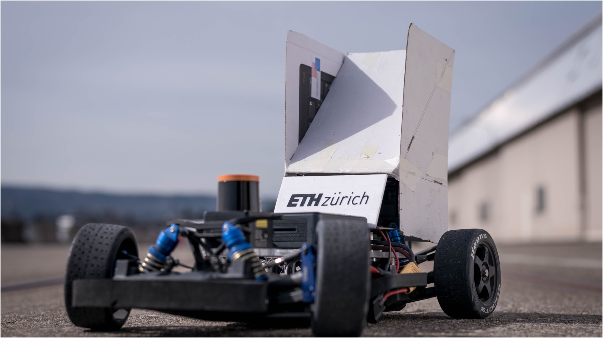

Thesis and research-oriented work from ETH Zurich and Columbia University — autonomous systems, robotic manipulation, and applied AI.
Bachelor thesis at ETH Zurich (PBL Lab, Dept. of Electrical Engineering) with ForzaETH. Supervised by Prof. John Lygeros and Prof. Michele Magno. Focused on steering system design, embedded control, and structural reliability for a 1:10 autonomous race car under competitive conditions.
The original plexiglass sensor mounting plate fractured under collisions, causing LiDAR misalignment and ~1.5 h replacement time per incident. A redesigned structural solution (Siemens NX) eliminated the failure mode. Servo-actuated steering validated with feedback error under 5% and response time ~0.2 s. Embedded control via STM32, Arduino Pico, and custom PCB within the ROS autonomy stack. Contributions tied to ForzaETH's platform for ICRA 2024.

First academic research experience at the Institute for Dynamic Systems and Control (IDSC), ETH Zurich, within Studies on Mechatronics. Supervised by Prof. Emilio Frazzoli. Critically analyzed lane-change models for human-driven and autonomous vehicles, assessing relevance for mixed-traffic environments. Findings defended before PhD researchers and faculty at IDSC.
Research at the ROAM Lab, Columbia University. MiniBEE is a compact robotic manipulator. The core question: which DOF configuration (6, 7, or 8) achieves fewest singularities and self-collisions while maintaining full coverage of a 20 × 20 × 20 cm cubic workspace. Involves URDF modeling, MoveIt configuration in ROS 2, and quantitative workspace and manipulability evaluation across candidate configurations.